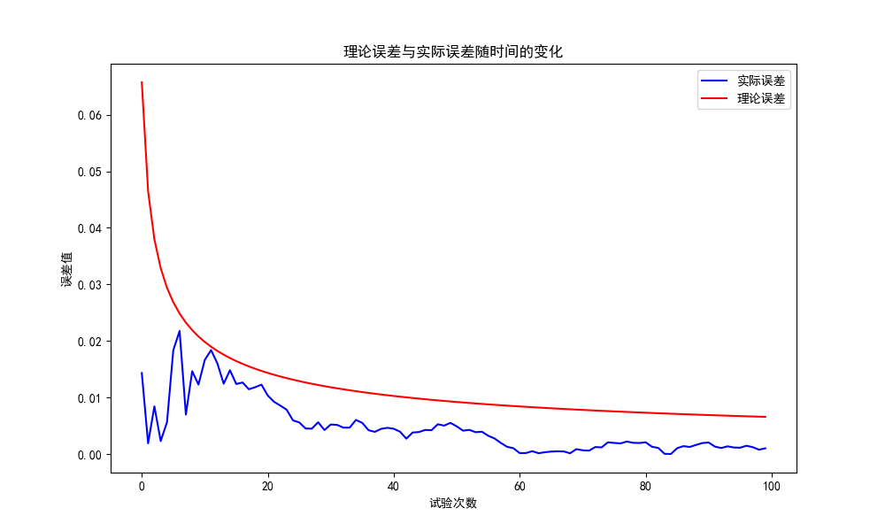

蒲丰投针法计算π值
2023年11月21日
夏泽宇 2021012242
1.实验原理
蒲丰投针实验的设置如下：
在平面上有若干条平行且间距为2a的线，重复投掷长度为2l的针。
每次投针试验， 实际上是从两个均匀分布的随机变量中抽样得到x, θ ， 定义描述针与平行线相交状况的随机变量s(x,θ)为：
s(x,θ)={10,x≤lsinθ,otherwise
投针与直线相交概率为：
P=∬s(x,θ)f1(x)f2(θ)dxdθ=∫0ππdθ∫0lsinθadx=πa2l
于是有：
π=aP2l≈asˉN2l,其中sˉN=N1i=1∑Ns(xi,θi)
2.实验结果
在a=4，l=3的条件下，进行了N=1000000次投针实验，得到π的估计值随实验次数增加的图像如下：

可以看到，随着实验次数的增加，π的估计值逐渐收敛于真实值π。实验最后的π估计值为3.14058
3.误差分析
由于π的估计值为π=asˉN2l，取2倍标准差计算，π的估计值的理论误差为：
Δπ=pπN2σp=2πNp1−p
通过计算π的实际误差与理论误差，得到如下图像：

可以看到，实际误差均在理论误差之内，实验结果可信。
4.实验代码
代码见：/code/main.py